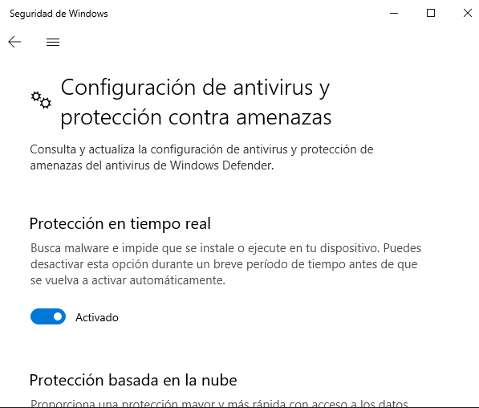

Ejercicios sobre antimalware¶
Pruebas de virus y antivirus. Para este ejercicio utilice una máquina virtual en que haya instalado un Windows 10 de 32 bits (p.e. este LTSC de evaluación) y vaya describiendo los pasos que realiza tomando captura de todos ellos:
- Situación preliminar
Deshabilite el Microsoft Defender, para lo cual debe ir a
Seguridad de Windows>Control de aplicaciones y navegadory desactivarComprobar aplicaciones y archivos:
Además en
Seguridad de Windows>Protección antivirus y contra amenazas>Administrar la configuracióndesactive laProtección en tiempo real:Descargue el programa proporcionado por eicar.com que simula ser malware y déjelo en un lugar fácilmente localizable (p.e. el escritorio).
Ejecute el falso malware para que quede residente en memoria.
- Escaneo con antivirus online
Acceda a la página de ESET.
Descargue y ejecute el antivirus online.
Compruebe si detecta el malware residente en memoria y el archivo de escritorio. ¿Qué acciones te sugiere?
- Escaneo con antivirus residente
Si el escaneo online, alteró la situación preliminar, vuelva a ella.
Active el Microsoft Defender.
¿Qué sucede? ¿Logra detectar eliminar el virus?
- Detección precoz
Elimine cualquier rastro del falso malware, si es que no lo logró en el paso anterior y asegúrese de que Microsoft Defender está activo.
Intente descargar el archivo otra vez. ¿Puede hacerlo?